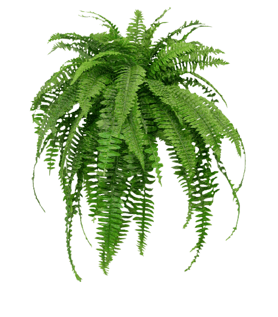

La historia evolutiva de las plantas pretende narrar la evolución biológica de las plantas, las cuales se describen en los muy diversos niveles de complejidad, que van desde la aparición de las microalgas unicelulares marinas, pasando por las primeras plantas terrestres como los musgos, luego la aparición de las plantas vasculares como licopodios y helechos, llegando hasta el desarrollo de la mayor complejidad que se observa en las plantas con conos (coníferas) y plantas con flores (angiospermas).
Se remonta a aproximadamente 500 millones de años. Comenzó con la simbiosis de bacterias que dieron origen a los cloroplastos y mitocondrias contenidas en una célula grande. Este organismo simbiótico originó a las algas a orillas del mar y a partir de estas, surgieron las plantas terrestres menos evolucionadas como las briofitas o musgos de escasos centímetros de altura hasta las plantas vasculares, como los helechos, gimnospermas y finalmente las angiospermas. Cuando se habla de evolución, de inmediato pensamos en animales (dinosaurios, mamuts, dientes de sable, etc.) olvidándonos de las plantas. Las plantas son los únicos organismos que pueden producir su propio alimento (fotosintéticos), son la base de la pirámide alimenticia de todos los animales, además, nos dan muchos otros beneficios, como materiales de construcción, energía, artículos para la vida diaria, ropa, consumo de dióxido de carbono y producción de oxígeno, y muchos otros más.
Las plantas no siempre han sido como las conocemos en la actualidad, también han cambiado (evolucionado) con el paso del tiempo, desde organismos unicelulares hasta desarrollar estructuras como raíces, tallos, hojas, flores, frutos y semillas en organismos complejos.
Datan más o menos 500 millones de años en ambientes acuáticos. De acuerdo con la teoría, se dice que una bacteria grande se “comió” a una cianobacteria (fotosintética) pero no la digirió, sino que la integró a su cuerpo como una estructura más (organelo), y así ambas establecieron una relación benéfica (simbiosis). Estos nuevos organelos se convirtieron en cloroplastos. Con el paso del tiempo, esta nueva célula “compuesta” volvió a ingerir otro tipo de bacteria, que posteriormente se convirtió en mitocondria, encargada de proveer y procesar la energía. Este es el momento en que la célula compuesta se convierte en un alga verde, que en un principio fueron unicelulares y al evolucionar se convirtieron en multicelulares. Estas últimas tienen un cuerpo simple con pocos órganos diferenciados, se reproducen asexualmente de varias formas y de manera sexual (produciendo esporas) y siempre son acuáticas. El origen y evolución de las plantas se ha basado en el estudio del ADN y de la interpretación de los fósiles, así como también la cerrada relación benéfica que tienen con los animales. Todo esto nos lleva a ver que el estudio de las plantas es importante y fascinante.
Hace aproximadamente 485 millones de año, las algas verdes conquistaron la tierra y se convirtieron en las primeras plantas terrestres, llamadas briofitas o musgos (plantas que se utilizan para adornar los nacimientos en navidad). Muchas briofitas se extinguieron, pero las actuales habitan en los bosques húmedos, y cerca de ríos y lagos. En promedio miden 5 cm de alto, debido a que no tienen un tejido vascular como las plantas más evolucionadas, algunas son laminares con forma de “hígado”, y otras desarrollaron un eje principal con pequeñas estructuras semejantes a las hojas (filodio) y células en forma de raíz (rizoides) que permiten anclar la planta al sustrato y absorber agua. Aunque las briofitas son terrestres, necesitan de lugares húmedos ya que sus espermatozoides flagelados (cola que les da movimiento) necesitan nadar hasta el óvulo (ovocélula) para su fecundación y producir esporas para su dispersión. Con el paso de millones de años, en un grupo de briofitas aparecieron los primeros trazos de un sistema vascular y la formación de hojas verdaderas, dango origen a los helechos.
Evolucionaron y se diversificaron en miles especies de tamaños pequeños y tan grandes como los árboles, formando los primeros bosques. En los helechos aparecen órganos más complejos, formando arbustos y árboles (con sistema vascular, hojas y raíces), pero éstos últimos no desarrollan madera verdadera, sino que muchas fibras permitieron que crecieran muy grandes. Su ciclo de vida sigue siendo similar al de las briofitas. En un grupo antiguo extinto aparecen las primeras semillas, llamadas helechos con semillas, que más tarde originaron a las gimnospermas.
Las primeras angiospermas aparecieron hace 140 millones de años, sin embargo, rápidamente se diversificaron formando hierbas, trepadoras, arbustos y árboles. Aparecieron todos los verticilos de la flor (sépalos, pétalos, estambres y ovario), frutos y semillas, así como también polinización por insectos. Este tipo de polinización permitió que las flores evolucionaran con formas muy complejas para mantener de manera exclusiva su relación con los polinizadores.
En pinos, araucarias y cícadas, la morfología es más compleja: el sistema vascular puede transportar agua y nutrientes, y la mayoría produce madera. Las estructuras reproductoras femeninas y masculinas están contenidas en los conos o estróbilos (que no son flores), ya sea en una misma planta o en plantas distintas. Aparecieron los granos de polen contenidos en los conos masculinos. Las primeras gimnospermas y algunos “fósiles vivientes” (ginkgo y cícadas) todavía tienen espermatozoides flagelados, sin embargo, ya no necesitan de agua para transportarse al óvulo ya que éstos se desplazan a través de un tubo (polínico) dentro del cono femenino. La polinización en las gimnospermas se lleva a cabo por anemofilia, es decir los granos de polen son transportados por el viento hacia los conos femeninos. De los fósiles de un grupo de gimnospermas extinto se reconstruyó un órgano parecido a las flores, por lo que se piensa que estas son los ancestros de las plantas con flores (angiospermas). Tanto helechos como gimnospermas fueron la fuente alimenticia de los dinosaurios.
Las primeras angiospermas aparecieron hace 140 millones de años, sin embargo, rápidamente se diversificaron formando hierbas, trepadoras, arbustos y árboles. Aparecieron todos los verticilos de la flor (sépalos, pétalos, estambres y ovario), frutos y semillas, así como también polinización por insectos. Este tipo de polinización permitió que las flores evolucionaran con formas muy complejas para mantener de manera exclusiva su relación con los polinizadores.